| 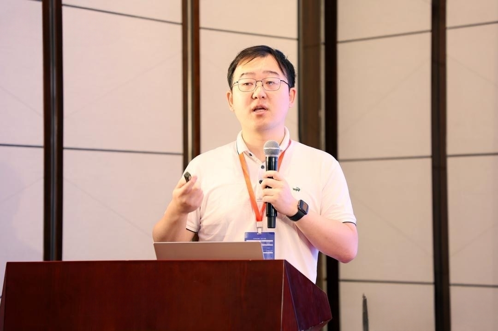 |
Han-Jia Ye (叶翰嘉)
(Pre-Tenure) Associate Professor School of Artificial Intelligence, Nanjing University Email: yehjxkxkxk@nju.edu.cn |
Han-Jia Ye is an Associate Professor (Pre-Tenure) in the School of Artificial Intelligence at the Nanjing University (NJU). His major research focuses on machine learning and its applications to data mining and computer vision, including representation learning, meta-learning, and model reuse.
Han-Jia received his B.Sc. degree from Nanjing University of Posts and Telecommunications, China in June 2013. After that, he became an M.Sc. student in the LAMDA Group led by professor Zhi-Hua Zhou in Nanjing University. From Sept. 2015, Han-Jia started his Ph.D. degree in machine learning under the supervision of Prof. Yuan Jiang and Prof. De-Chuan Zhan.
During 2017-2018, he visited Prof. Fei Sha's group in University of Southern California, LA. He received his PhD degree at May 2019.
06/2024: Release the Tabular Data Learning Toolbox TALENT, a baseline ModernNCA, as well as the benchmark.
06/2024: Release the Multilingual Multimodal Large Language Model Parrot.
06/2024: 1 arXiv paper on Multimodal LLMs Learning without Text-only Forgetting.
06/2024: Release the OVIS Multimodal Large Language Model [Paper].
05/2024: 4 papers have been accepted by ICML 2024.
05/2024: 1 paper revisiting the channel independent strategy for multivariate time series forecasting has been accepted by TKDE 2024.
04/2024: 1 paper on continual learning with pre-trained model has been accepted by IJCAI 2024 (survey track).
03/2024: 2 papers have been accepted by CVPR 2024.
02/2024: Glad to host a tutorial with Yao-Xiang Ding on model reuse at AAAI 2024. Slides: [Part1][Part2]
12/2023: 2 papers have been accepted by AAAI 2024.
09/2023: 2 papers have been accepted by NeurIPS 2023.
09/2023: Release the Pre-Trained Model-Based Continual Learning Toolbox PILOT [Report][Survey].
09/2023: 1 paper on contextualized meta-learning has been accepted by TPAMI.
08/2023: Release the Model Reuse toolbox ZhiJian [Report][Documents].
08/2023: Glad to host a tutorial with Ying Wei and Da-Wei Zhou on continual learning at IJCAI 2023. Slides: [Part1][Part2]
06/2023: 1 arXiv paper on pre-trained model selection/ranking.
02/2023: 1 survey paper on deep class-incremental learning.
01/2023: 3 papers have been accepted by ICLR 2023.
08/2022: Very honored to serve as the Tutorial Co-Chairs of SDM 2023.
04/2022: 1 papers on unsupervised meta-learning has been accepted by TPAMI.
03/2022: 2 papers on meta-learning and heterogeneous model reuse have been accepted by TPAMI.
02/2022: Very honored to receive CCF Outstanding Doctoral Dissertation Award 2021.
| 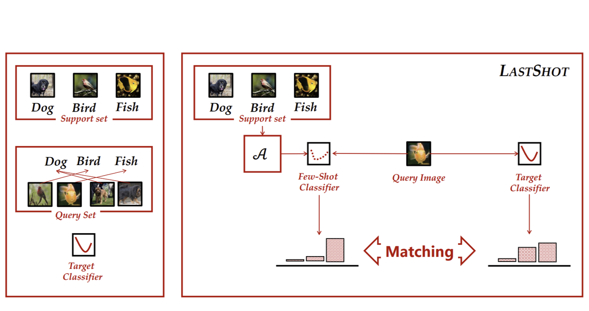 | Han-Jia Ye, Lu Ming, De-Chuan Zhan, Wei-Lun Chao. Few-Shot Learning with a Strong Teacher. IEEE Transactions on Pattern Analysis and Machine Intelligence. To appear. [pdf] [code] | |
| 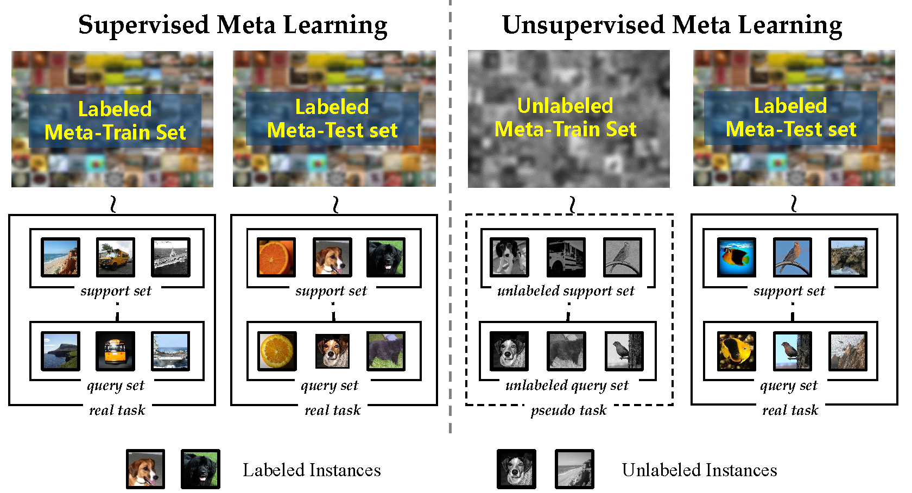 | Han-Jia Ye, Lu Han, De-Chuan Zhan. Revisiting Unsupervised Meta-Learning via the Characteristics of Few-Shot Tasks. IEEE Transactions on Pattern Analysis and Machine Intelligence. 45(3): 3721-3737, 2021. [pdf] [code] | |
| 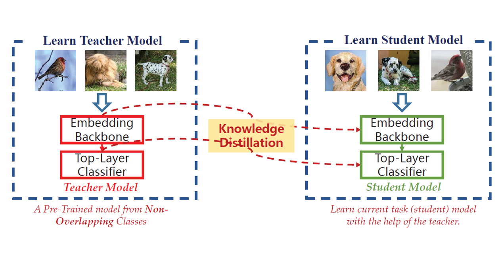 | Han-Jia Ye, Su Lu, De-Chuan Zhan. Generalized Knowledge Distillation via Relationship Matching. IEEE Transactions on Pattern Analysis and Machine Intelligence. 45(2): 1817-1834, 2023. [pdf] [code] | |
| 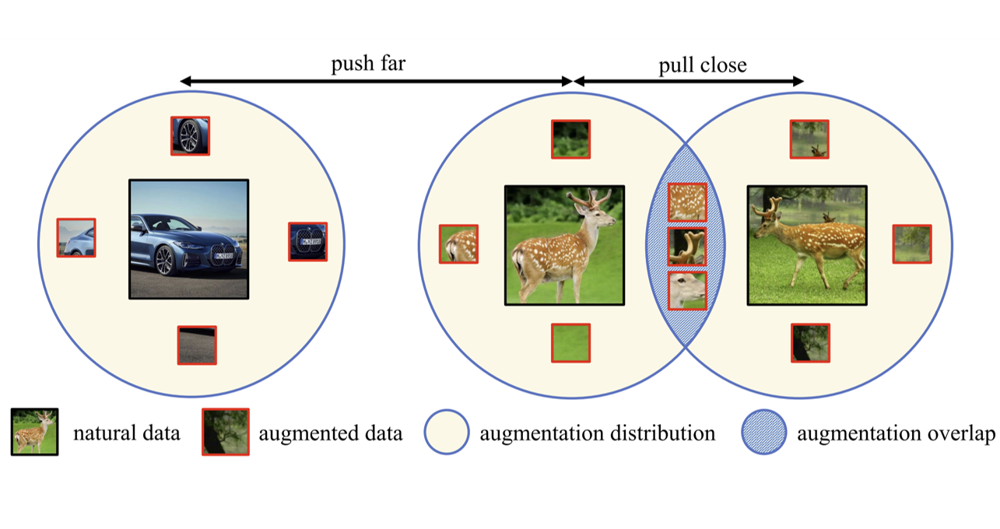 | Lu Han, Han-Jia Ye, De-Chuan Zhan. Augmentation Component Analysis: Modeling Similarity via the Augmentation Overlaps. In: The 11th International Conference on Learning Representations (ICLR) 2023. Kigali, Rwanda. [pdf] [code] | |
| 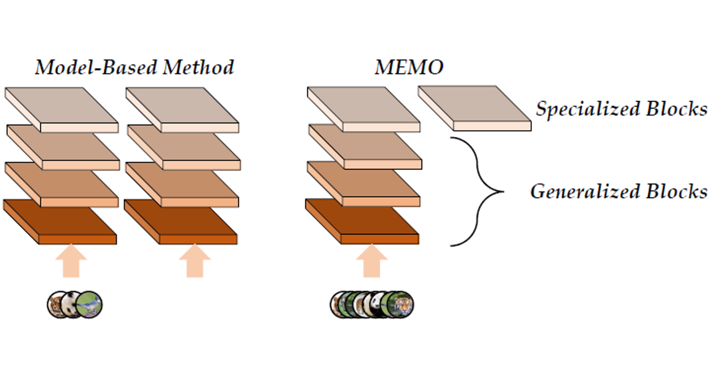 | Da-Wei Zhou, Qi-Wei Wang, Han-Jia Ye, De-Chuan Zhan. A Model or 603 Exemplars: Towards Memory-Efficient Class-Incremental Learning. In: The 11th International Conference on Learning Representations (ICLR) 2023. Kigali, Rwanda. [pdf] [code] | |
| 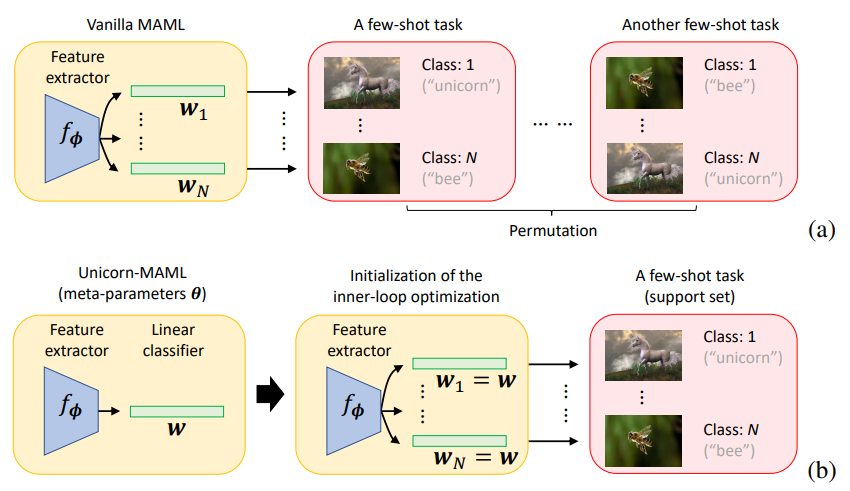 | Han-Jia Ye, Le Gan, De-Chuan Zhan. How to Train Your MAML to Excel in Few-Shot Classification. In: The 10th International Conference on Learning Representations (ICLR) 2022. Virtual. [pdf] [code] | |
| 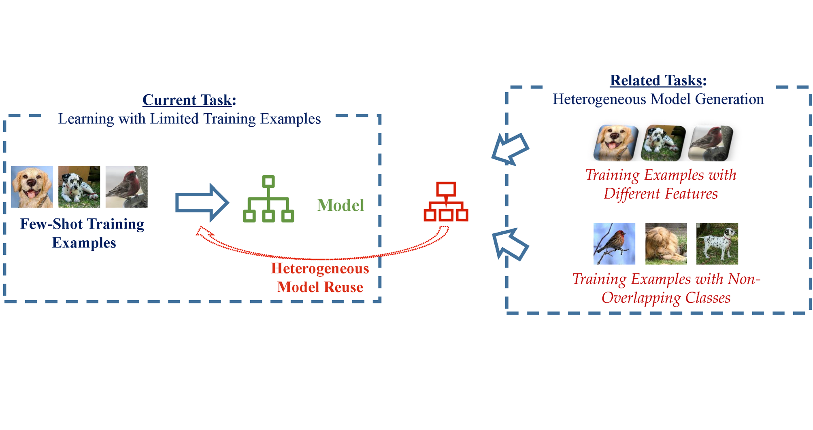 | Han-Jia Ye, De-Chuan Zhan, Yuan Jiang, Zhi-Hua Zhou. Heterogeneous Few-Shot Model Rectification with Semantic Mapping. IEEE Transactions on Pattern Analysis and Machine Intelligence. 43(11): 3878-3891, 2021. [pdf] [code] | |
| 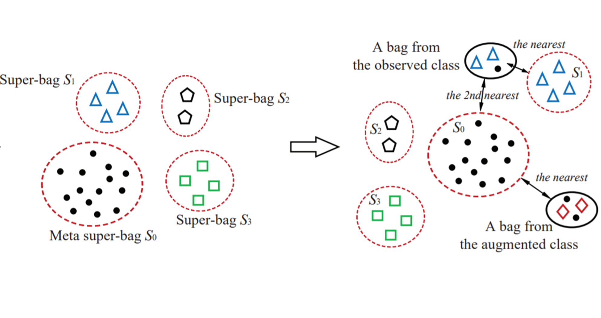 | Xiu-Shen Wei*, Han-Jia Ye*, Xin Mu, Jianxin Wu, Chunhua Shen, Zhi-Hua Zhou. Multi-Instance Learning With Emerging Novel Class. IEEE Transactions on Knowledge and Data Engineering. 33(5): 2109-2120, 2021. [pdf] | |
| 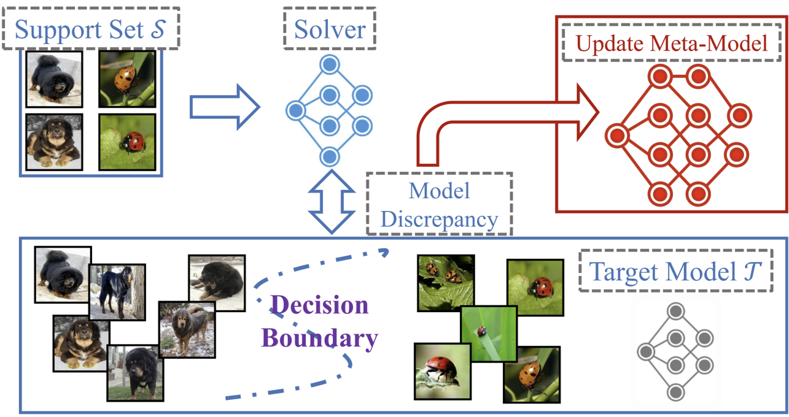 | Su Lu, Han-Jia Ye, Le Gan, De-Chuan Zhan. Towards Enabling Meta-Learning from Target Models. In: Advances in Neural Information Processing Systems 34 (NeurIPS) 2021: 8060--8071. Virtual. [pdf] [code] | |
| 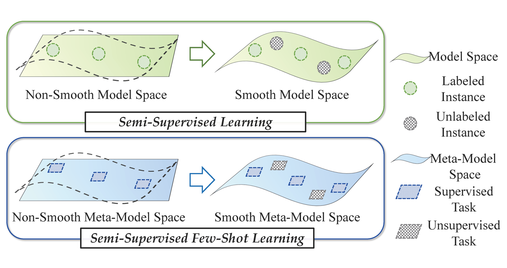 | Han-Jia Ye, Xin-Chun Li, De-Chuan Zhan. Task Cooperation for Semi-Supervised Few-Shot Learning. In: Proceedings of the 35th AAAI Conference on Artificial Intelligence (AAAI) 2021: 10682-10690. Virtual. [pdf][code] | |
| 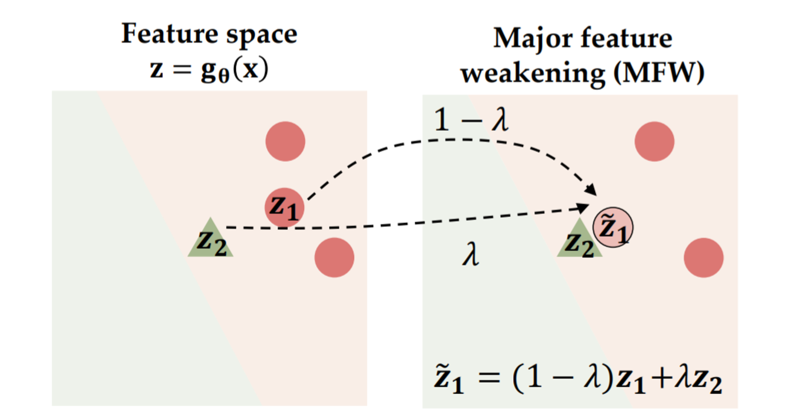 | Han-Jia Ye, De-Chuan Zhan, Wei-Lun Chao. Procrustean Training for Imbalanced Deep Learning. In: Proceedings of the IEEE/CVF International Conference on Computer Vision (ICCV) 2021: 92--102. Montreal, Canada. [pdf] | |
| 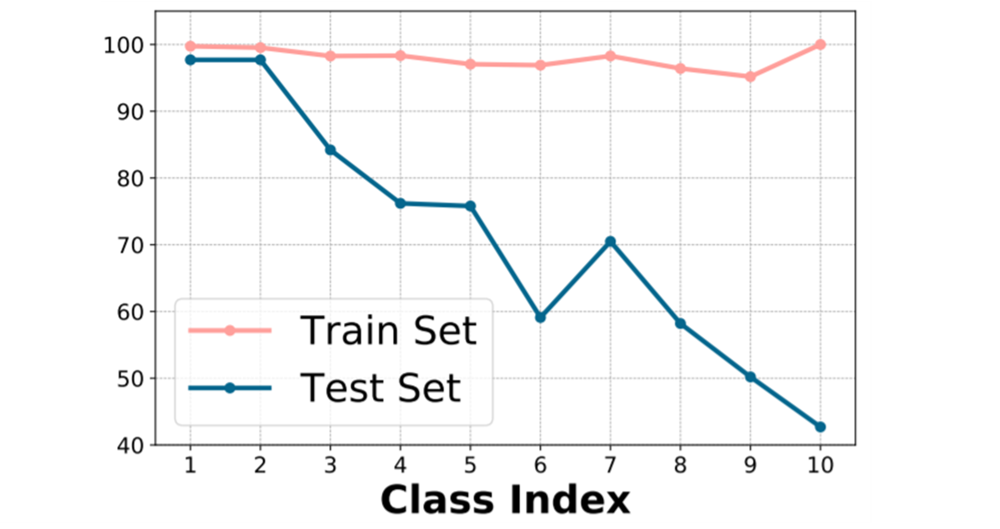 | Han-Jia Ye, Hong-You Chen, De-Chuan Zhan, Wei-Lun Chao. Identifying and Compensating for Feature Deviation in Imbalanced Deep Learning. CoRR abs/2001.01385. 2020. [pdf] | |
| 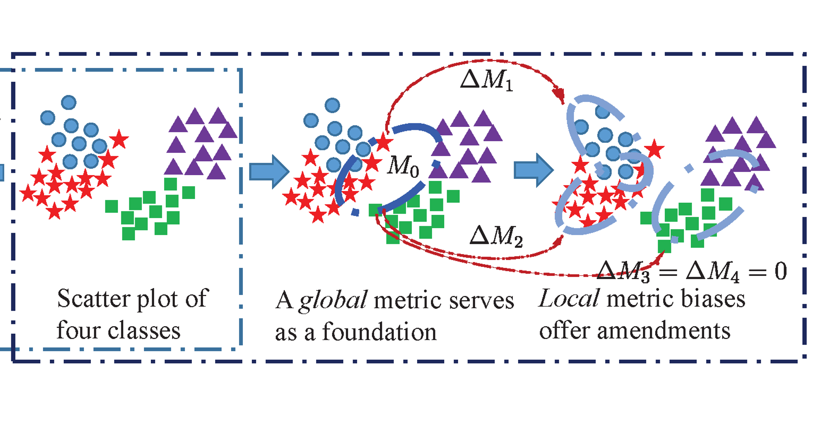 | Han-Jia Ye, De-Chuan Zhan, Nan Li, Yuan Jiang. Learning Multiple Local Metrics: Global Consideration Helps. IEEE Transactions on Pattern Analysis and Machine Intelligence. 42(7): 1698-1712, 2020. [pdf] | |
| 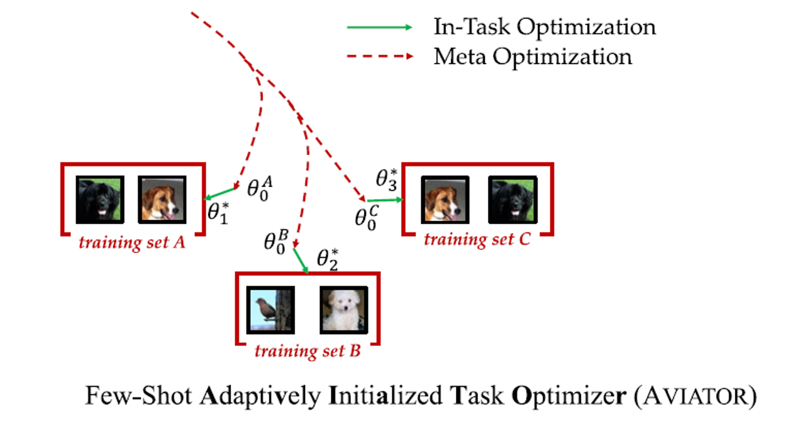 | Han-Jia Ye, Xiang-Rong Sheng, De-Chuan Zhan. Few-shot learning with adaptively initialized task optimizer: a practical meta-learning approach. Machine Learning. 109(3): 643-664, 2020. [pdf] [code] | |
| 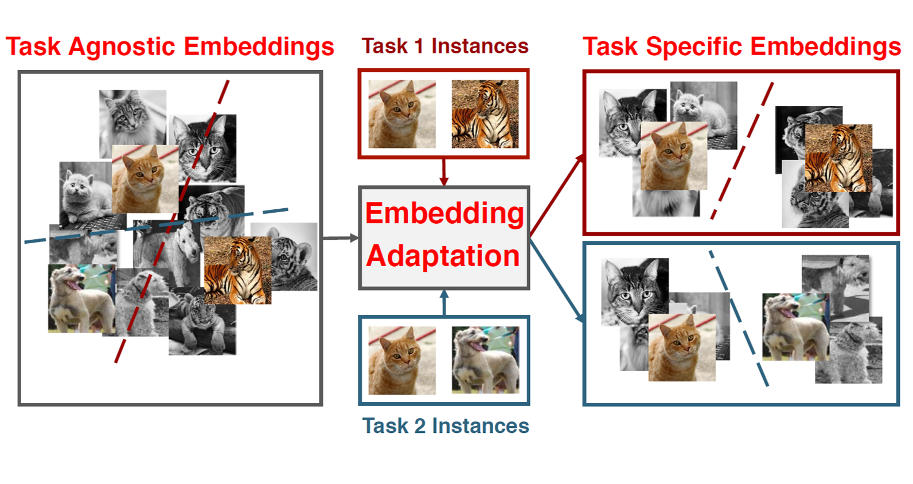 | Han-Jia Ye, Hexiang Hu, De-Chuan Zhan, Fei Sha. Few-Shot Learning via Embedding Adaptation With Set-to-Set Functions. In: Proceedings of the IEEE/CVF Conference on Computer Vision and Pattern Recognition (CVPR) 2020: 8805--8814. Seattle, WA. [pdf] [code] | |
| 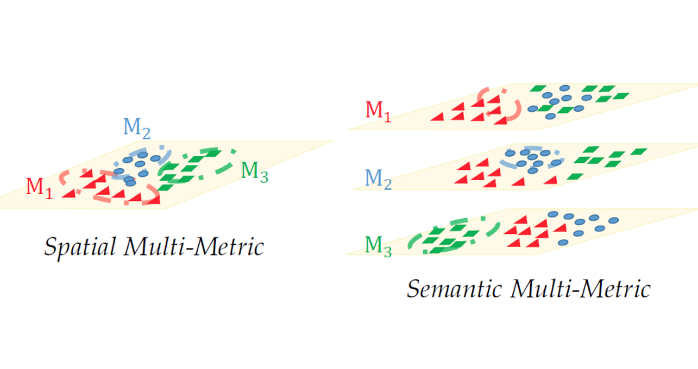 | Han-Jia Ye, De-Chuan Zhan, Yuan Jiang, Zhi-Hua Zhou. What Makes Objects Similar: A Unified Multi-Metric Learning Approach. IEEE Transactions on Pattern Analysis and Machine Intelligence. 41(5): 1257-1270, 2019. [pdf] [supp] [code] | |
| 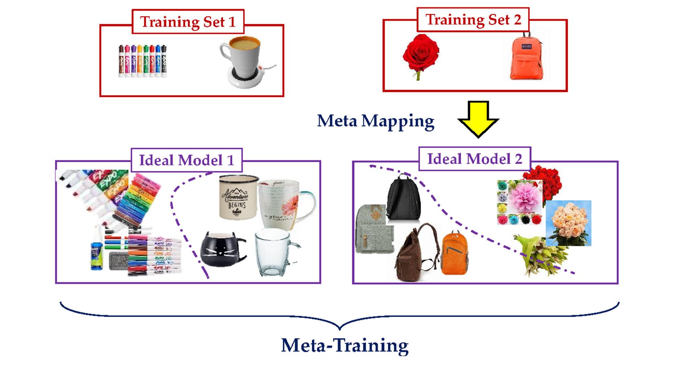 | Wei-Lun Chao*, Han-Jia Ye*, De-Chuan Zhan, Mark Campbell, Kilian Q. Weinberger. A Meta Understanding of Meta-Learning. In: The Adaptive and Multitask Learning (AMTL) 2019 Workshop 2019. Long Beach, CA. [pdf] | |
| 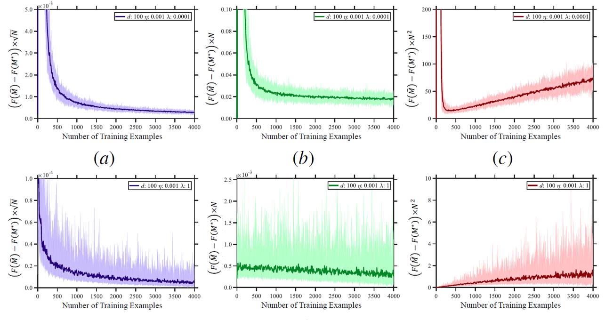 | Han-Jia Ye, De-Chuan Zhan, Yuan Jiang. Fast generalization rates for distance metric learning. Machine Learning. 108(2): 267-295, 2019. [pdf] | |
| 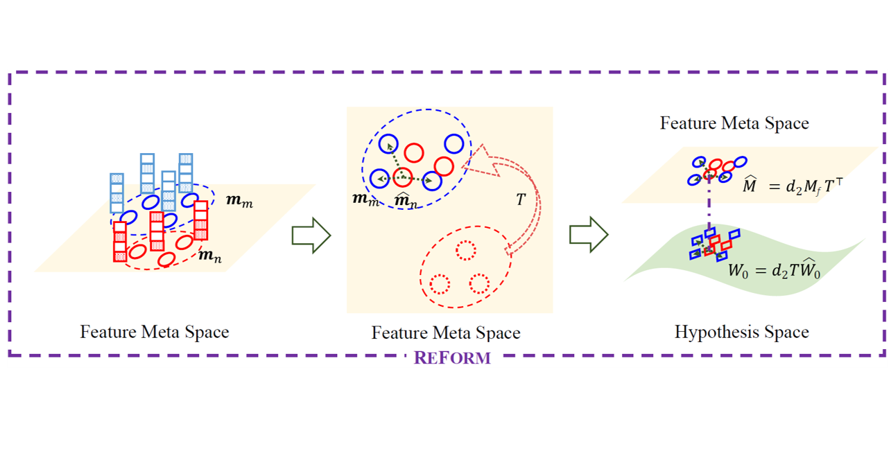 | Han-Jia Ye, De-Chuan Zhan, Yuan Jiang, Zhi-Hua Zhou. Rectify Heterogeneous Models with Semantic Mapping. In: Proceedings of the 35th International Conference on Machine Learning (ICML) 2018: 1904-1913. Stockholm, Sweden. [pdf] [code] | |
| 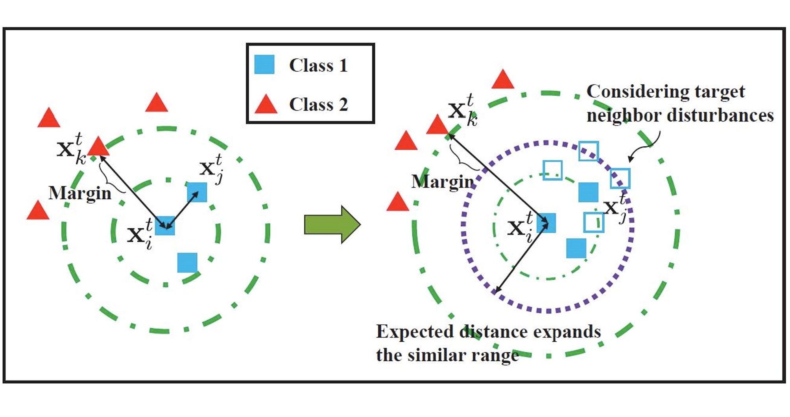 | Han-Jia Ye, De-Chuan Zhan, Xue-Min Si, Yuan Jiang. Learning Mahalanobis Distance Metric: Considering Instance Disturbance Helps. In: Proceedings of the 26th International Joint Conference on Artificial Intelligence (IJCAI) 2018: 3315-3321. Melbourne, Australia. [pdf] [code] | |

|
Han-Jia Ye, De-Chuan Zhan, Yuan Jiang, Zhi-Hua Zhou. What Makes Objects Similar: A Unified Multi-Metric Learning Approach. In: Advances in Neural Information Processing Systems 29 (NIPS) 2016: 1235-1243. Barcelona, Spain. [pdf] [code] | |
| 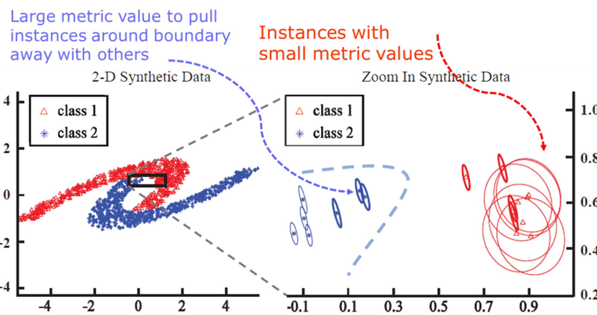 | Han-Jia Ye, De-Chuan Zhan, Yuan Jiang. Instance Specific Metric Subspace Learning: A Bayesian Approach. In: Proceedings of the 30th AAAI Conference on Artificial Intelligence (AAAI) 2016: 2272--2278. Phoenix, AR. [pdf] | |
| 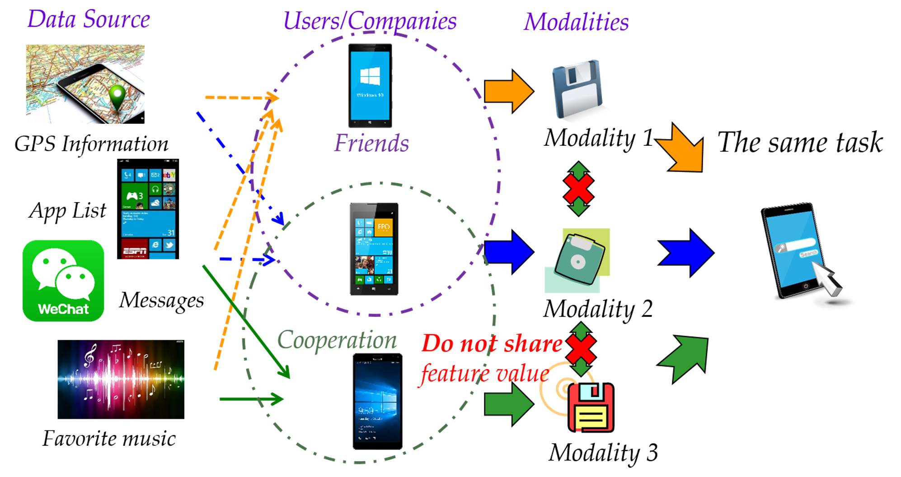 | Han-Jia Ye, De-Chuan Zhan, Yuan Miao, Yuan Jiang, Zhi-Hua Zhou. Rank Consistency based Multi-View Learning: A Privacy-Preserving Approach. In: Proceedings of the 24th ACM International Conference on Information and Knowledge Management (CIKM) 2015: 991--1000. Melbourne, Australia. [pdf] [code] |
Tutorial Co-Chair for SDM 2023
Doctoral Forum Co-Chair for SDM 2022
Area Chair for ICML 2024, CVPR 2024, SDM 2023, SDM 2022, ECML 2020. Senior PC Member for IJCAI 2021.
Reviewer for JMLR, TPAMI, AIJ, TKDE, TKDD, MLJ, etc.
Reviewer/PC Member for ICML/NeurIPS/ICLR/AAAI/IJCAI/CVPR/ICCV, etc.
TeachingTime Series Analysis. (For undergraduate and graduate students, Autumn, 2024)
Introduction to Machine Learning. (For undergraduate and graduate students, Autumn, 2024)
Time Series Analysis. (For undergraduate and graduate students, Autumn, 2023)
Introduction to Machine Learning. (For undergraduate and graduate students, Autumn, 2023)
Time Series Analysis. (For undergraduate and graduate students, Autumn, 2022)
Introduction to Machine Learning. (With Prof. Zhi-Hua Zhou; For undergraduate and graduate students, Autumn, 2022)
Introduction to Machine Learning. (For undergraduate students, Spring, 2022)
Digital Singal Processing. (For undergraduate and graduate students, Autumn, 2021)
- Qi-Wei Wang, 2021-2024
- Yi-Kai Zhang , 2021-
- Ting-Ji Huang , 2022-
- Lu Ren , 2022-
- Chao Yi , 2022-
- Qi-Le Zhou , 2022-
- Xu-Yang Chen , 2023-
- Hai-Long Sun , 2023-
- Huai-Hong Yin, 2023-
- Tao Zhou, 2023-
- Learning with Tabular Data [Toolbox] [Baseline] [Benchmark]
- Model Reuse [Toolbox] [Report]
- Representation-based Few-Shot Learning [Supervised Toolbox] [Unsupervised Toolbox]
- Class-Incremental Learning [Toolbox] [Pre-Trained Model-Based Toolbox] [Survey1][Survey2] [Survey in Chinese]
Last Update@2024.05 by Han-Jia Ye. Thanks Dr. Deqing Sun and Dr. Ce Liu for the template.